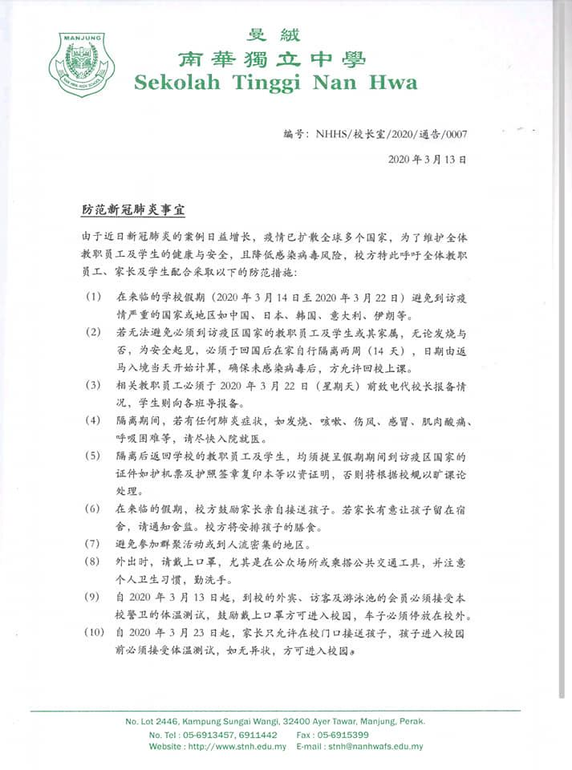
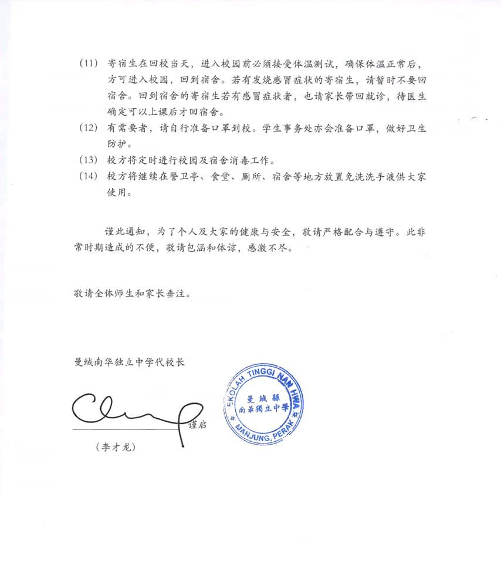

新冠肺炎疫情进入全球大流行阶段，而我国的确诊案例也在迅速攀升。为此，本校吁请全体
新冠肺炎疫情进入全球大流行阶段，而我国的确诊案例也在迅速攀升。为此，本校吁请全体教职员生与家长保持高度的公民与防疫意识，避免在3月学校假期到海外旅游与避免与疫区的亲友密切接触。同时，也减少到通风不畅和人流密集场所活动。共勉


新冠肺炎疫情进入全球大流行阶段，而我国的确诊案例也在迅速攀升。为此，本校吁请全体教职员生与家长保持高度的公民与防疫意识，避免在3月学校假期到海外旅游与避免与疫区的亲友密切接触。同时，也减少到通风不畅和人流密集场所活动。共勉

